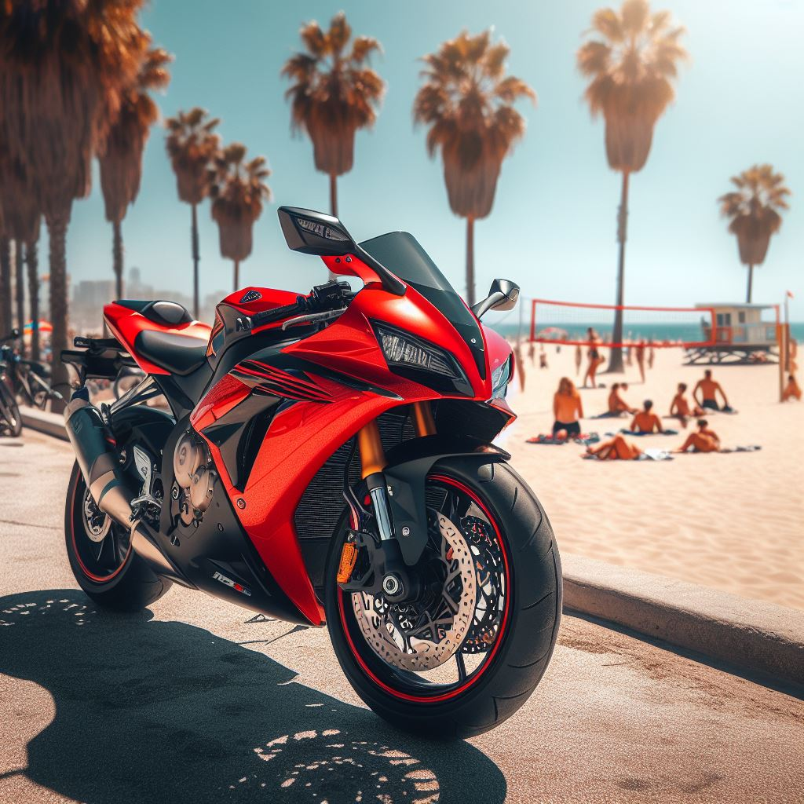
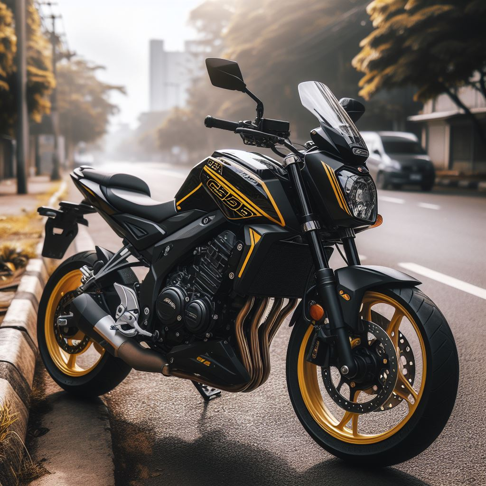

A 2018-as Honda Civic Type R műszaki adatai és teljesítményjellemzői a következők:
- Motor: 2.0 literes, négyhengeres, turbófeltöltős
- Teljesítmény: 306 lóerő (228 kW) 6500 fordulat/perc mellett
- Nyomaték: 400 Nm (295 lb-ft) 2500-4500 fordulat/perc között
- Sebességváltó: 6-fokozatú kézi sebességváltó
- Hajtáslánc: Elsőkerék-meghajtás (FWD)
- Gyorsulás (0-100 km/h): Körülbelül 5,7 másodperc
- Végsebesség: Körülbelül 272 km/h (169 mph)
- Üzemanyag-fogyasztás: Kb. 10,6 l/100 km városban, 8,0 l/100 km országúton
A 2018-as Honda Civic Type R a teljesítményorientált hot hatch kategóriában kiemelkedő, sportos vezetési élményt és erős motort kínál.

A 2016-os Honda NSX (más néven Acura NSX az észak-amerikai piacon) műszaki adatai és teljesítményjellemzői a következők:
- Motor: 3.5 literes, V6-os, dupla turbófeltöltős benzines motor
- Villanymotorok: Három villanymotor (kettő az első tengelynél és egy a hátsó tengelynél)
- Összteljesítmény: 573 lóerő (427 kW)//Benzinmotor: 500 lóerő (373 kW)//Villanymotorok: 73 lóerő (54 kW)
- Nyomaték: 645 Nm (476 lb-ft)
- Sebességváltó: 9-fokozatú dupla kuplungos automata sebességváltó
- Hajtáslánc: Összkerék-meghajtás (AWD)
- Gyorsulás (0-100 km/h): Körülbelül 3,0 másodperc
- Végsebesség: Körülbelül 307 km/h (191 mph)
- Üzemanyag-fogyasztás: Kb. 11,2 l/100 km kombinált (a tényleges fogyasztás változhat)
A 2016-os Honda NSX egy hibrid sportautó, amely a benzinmotor és az elektromos motorok kombinációjával nyújt lenyűgöző teljesítményt és vezetési élményt. Az autó fejlett technológiákat használ, mint például a Sport Hybrid SH-AWD rendszer, amely kiváló irányíthatóságot és stabilitást biztosít.

A 2024-es Honda CBR1000RR-R Fireblade műszaki adatai és teljesítményjellemzői a következők:
- Motor: 999cc, soros négyhengeres, folyadékhűtéses
- Teljesítmény: Kb. 214 lóerő (160 kW) 14,500 fordulat/perc mellett
- Nyomaték: 113 Nm (83 lb-ft) 12,500 fordulat/perc mellett
- Sebességváltó: 6-fokozatú, gyorsváltóval (Quickshifter) és csúszókuplunggal
- Hajtáslánc: Lánchajtás
- Súly: Kb. 201 kg (443 lbs) menetkész állapotban
- Üzemanyagtartály: 16 liter
- Elektronikai rendszer: IMU-vezérelt (Inertial Measurement Unit) elektronikai csomag, ami tartalmazza a többfokozatú kipörgésgátlót (Traction Control), ABS-t, kerékcsúszásgátlót (Wheelie Control), motorfék-vezérlést (Engine Brake Control) és különféle vezetési módokat
- Felfüggesztés: Teljesen állítható Showa villa elöl és Pro-Link felfüggesztés hátul
- Fékek: Brembo Stylema féknyergek elöl, dupla tárcsafék elöl és egyetlen tárcsafék hátul
A 2024-es Honda CBR1000RR-R Fireblade a versenypályára szánt sportmotorok csúcsát képviseli, amelyet a Honda MotoGP technológiái inspiráltak. Magas teljesítménye, fejlett elektronikai rendszerei és kiváló minőségű alkatrészei teszik a Fireblade-et egy rendkívül versenyképes és izgalmas választássá a sportmotorosok számára.

A 2024-es Honda CB500 Hornet műszaki adatai és teljesítményjellemzői a következők:
- Motor: 471cc, soros kéthengeres, folyadékhűtéses
- Teljesítmény: Kb. 47 lóerő (35 kW) 8,500 fordulat/perc mellett
- Nyomaték: 43 Nm (31.7 lb-ft) 7,000 fordulat/perc mellett
- Sebességváltó: 6-fokozatú
- Hajtáslánc: Lánchajtás
- Súly: Kb. 189 kg (417 lbs) menetkész állapotban
- Üzemanyagtartály: 17,1 liter
- Felfüggesztés: Teljesen állítható teleszkóp villa elöl és Pro-Link felfüggesztés hátul
- Fékek: Kettős tárcsafék elöl és egyetlen tárcsafék hátul ABS-szel
- Kerekek: 17 colos alumínium kerekek
- Műszerek és elektronika: LCD műszeregység, több fokozatú kipörgésgátló (Traction Control), különféle vezetési módok
A 2024-es Honda CB500 Hornet egy középsúlyú naked bike, amelyet mindennapi használatra és sportos motorozásra terveztek. Megbízható és gazdaságos motorral, modern felfüggesztési rendszerrel és fejlett elektronikai felszereltséggel rendelkezik, amely kiváló választássá teszi a kezdő és középhaladó motorosok számára egyaránt.